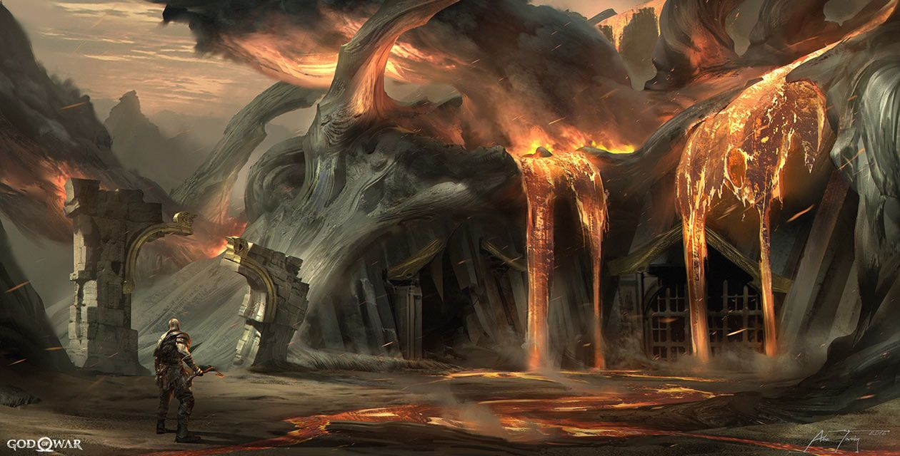

Muspelheim
 Muspelheim é conhecido como "O Reino do Fogo", afirmado ser a fonte de todo o calor nos Nove Reinos. É o lar de Surtr, o bravo, e seus descendentes, os Gigantes do Fogo, que foram profetizados para incendiar e destruir o Reino dos Deuses de Asgard durante o Ragnarök. Como seu único propósito é causar o Ragnarök, Mimir notou que nenhum Fire Giant aparecerá até que comece.
Sua paisagem consiste em vulcões ardentes cuspindo cinzas e brasas que escurecem os céus, jorrando cascatas de lava que criam rios de rocha derretida e o que parecem ser totens de Fire Trolls enterrados na terra.
Kratos e Atreus podem coletar todas as cifras de Muspelheim em Midgard e Alfheim para acessar o mundo de fogo e atravessar a montanha para recuperar os materiais exclusivos do reino, como Smoldering Ember e Crest of Flame.
No topo da montanha onde as Provas de Muspelheim são realizadas é onde a Valquíria Gondul foi aprisionada.